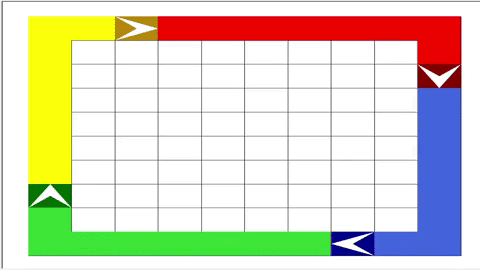
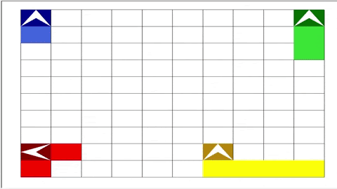
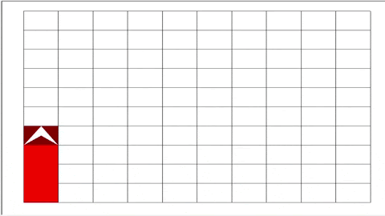
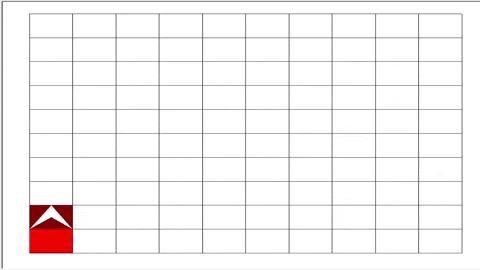

Movement Functions
player.turn_cw()
Turns the player 90 degrees clockwise
player.turn_ccw()
Turns the player 90 degrees counterclockwise
player.turn_random_direction()
Makes player turn random direction
player.turn_180()
Turns the player 180 degrees
player.face_right()
player.face_left()
player.face_up()
player.face_down()
Makes player change to specified direction (left, right, up, or down)
Sensory Functions
player.facing_wall()
Boolean return Value; It returns true when the player is facing the wall (as in it
will run into the wall if it goes foreward one block) and false when it is not
player.facing_empty()
Boolean return Value; Returns true when player is facing an empty square (a white
square), false otherwise.
player.facing_own_territory()
Boolean return Value; Returns true or false depending on whether the player is
facing territory of own color (true if facing own color)
player.facing_enemy_territory()
Boolean return Value: Returns true if the player is facing an enemy’s territory
(marked by a color other than its own)
player.get_direction()
Integer return Value: Returns an integer depending on which direction the player is
facing
0: Up
1: Right
2: Down
3: Left
player.get_x()
Integer return Value: Returns an integer based on x-coordinate location
Note: (x=1, y=1) is the bottom left corner, and (x=10, y=10) is the top right
corner
player.get_y()
Integer return Value: Returns an integer based on y-coordinate location
player.enemy_dist_in_front()
Returns integer based on how much distance is between player and enemy

if player.facing_wall():
player.turn_cw()

if player.facing_empty():
player.turn_random_direction()

if player.facing_wall() or player.facing_own_territory():/h2>
player.turn_cw()

if player.get_y() < 6:
player.face_up()
else:
player.turn_random_direction()